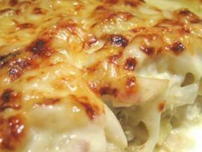

Bacalhau com Natas

Description
What about a Bacalhau com Natas, Portuguese style, for dinner?
Learn how to do it
Ingredients
- posta(s) de bacalhau demolhado
- 1 cebola(s) cortada(s) em rodelas
- azeite
- 2 c. sopa farinha
- 1 kg batata(s)
- noz moscada
- 2 dl (200 ml) de natas (creme de leite)
- queijo ralado
- q.b. sal
- q.b. Pimenta
Steps
- Coza as postas de bacalhau em leite.
- Corte a cebola em rodelas finas e refogue em azeite até estar mole e transparente.
- Escorra o bacalhau e desfaça-o em lascas e junte à cebolada. Deixe refogar lentamente. Polvilhe com farinha, mexa e regue com leite coado, onde cozeu antes o bacalhau. Deixe engrossar, mexendo de vez em quando.
- Descasque e corte as batatas em cubos e frite em óleo não quente, de forma a deixá-las mais cozidas que fritas. Escorra as batatas e junte-as ao bacalhau. Tempere com sal, pimenta e noz-moscada.
- Deite tudo num tabuleiro untado de ir ao forno, espalhe por cima as natas e polvilhe com queijo ralado. Leve ao forno até estar gratinado.
- Sirva com uma salada fresca de alface e tomate.